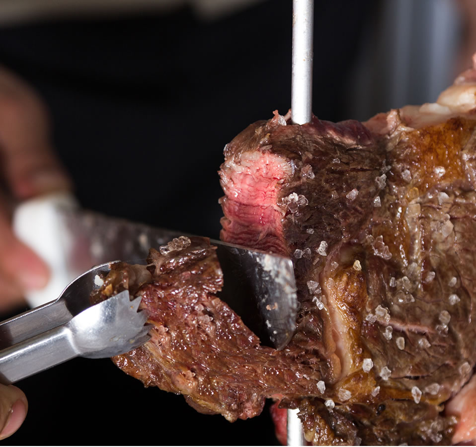
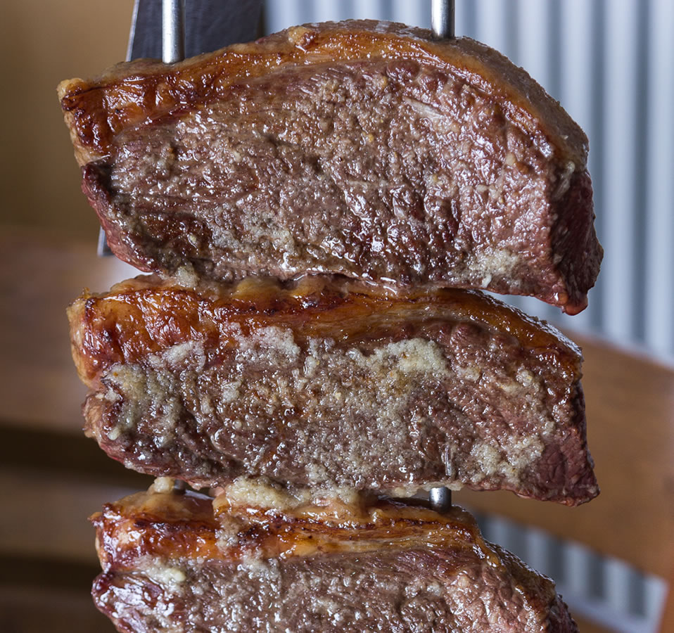
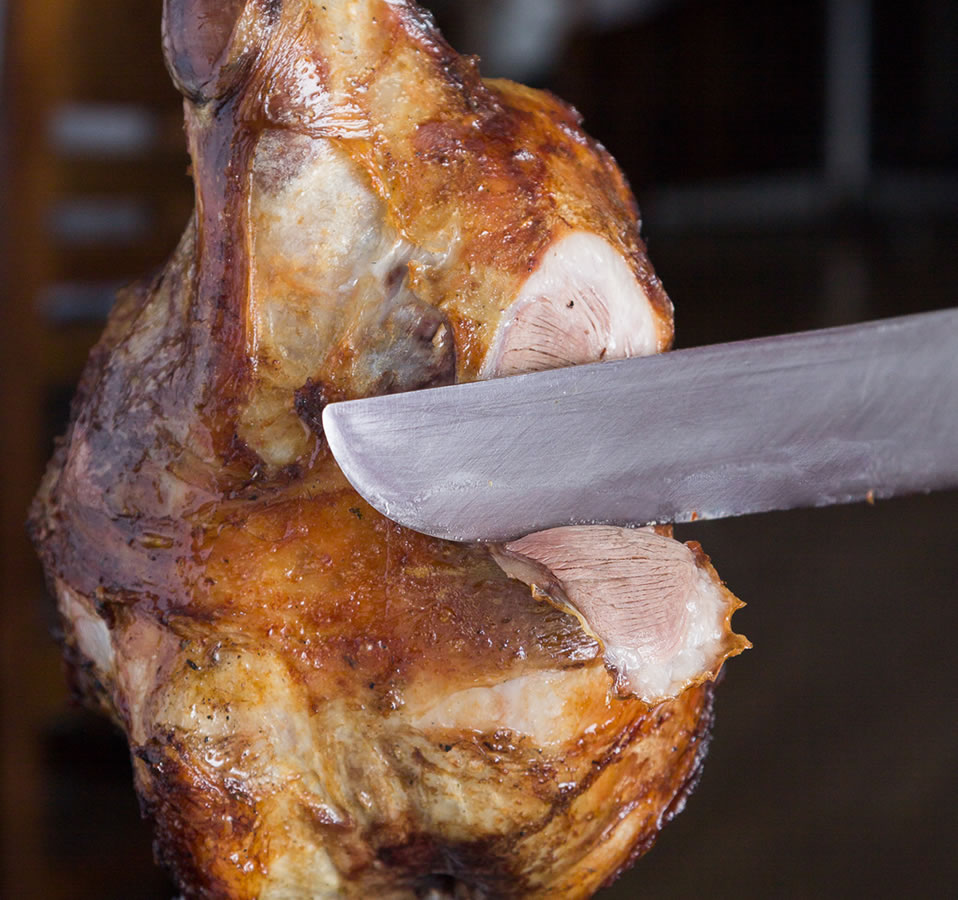

-
Bife Nacho:
Retirado da parte dianteira do contra filé, de origem argentina vem a cada dia mais
conquistando a todos os brasileiros que amam uma boa carne. É um corte nobre,
cujo nome vem de origem espanhola, onde ancho significa largo. Possui uma leve
e saborosa gordura interna, que se estende sobre suas fibras dando um sabor único
a carne. É uma carne que possui bastante marmoreio sendo assim extremamente
suculenta e macia.

-
Picanha:
Parte macia, mais marmorizada e com capa de gordura, que é responsável pelo seu
sabor, suculência e maciez. É própria para churrascos, podendo ser assada inteira,
em postas, no espeto ou na grelha. Com as variações em: tradicional, nobre, ao
alho e gaúcha, a picanha é uma das carnes mais procuradas no Ponteio. É
importante prepará-la com a gordura para que o sabor e a maciez fiquem mais
acentuados, podendo-se retirá-la na hora do consumo.

-
Cordeiro:
Sempre é um sucesso em churrascos. Sua versatilidade permite que seja assada no
forno, na brasa. A carne de cordeiro é considerada de uma linha nobre e produzida
com um alto padrão de qualidade. Seu sabor é delicado e sua carne é macia, de
consistência firme e textura lisa. No ponteio a costeleta de cordeiro e grelhada
apenas no sal grosso e servida no ponto certo, oferecendo uma carne suculenta e
saborosa. Para completar o time oferecemos o Pernil e a Paleta, aqui no Ponteio
eles são marinados em um tempero especial para destacar ainda mais o sabor.
